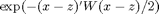
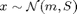

reward.m
Summary: Compute expectation, variance, and their derivatives of an exponentiated negative quadratic cost , where 
Input arguments:
m: D-by-1 mean of the state distribution S: D-by-D covariance matrix of the state distribution z: D-by-1 target state W: D-by-D weight matrix
Output arguments:
muR: 1-by-1 expected reward dmuRdm: 1-by-D derivative of expected reward wrt input mean dmuRdS: D-by-D derivative of expected reward wrt input covariance matrix sR: 1-by-1 variance of reward dsRdm: 1-by-D derivative of variance of reward wrt input mean dsRdS: D-by-D derivative reward variance wrt input covariance matrix
Copyright (C) 2008-2013 by Marc Deisenroth, Andrew McHutchon, Joe Hall, and Carl Edward Rasmussen.
Last modification: 2013-01-20
Contents
High-Level Steps
- Compute expected reward
- Compute the derivatives of the expected reward with respect to the input distribution (optional)
- Compute variance of reward
- Compute the derivatives of the variance of the reward with respect to the input distribution (optional)
function [muR, dmuRdm, dmuRdS, sR, dsRdm, dsRdS] = reward(m, S, z, W)
Code
% some precomputations D = length(m); % get state dimension SW = S*W; iSpW = W/(eye(D)+SW); % 1. expected reward muR = exp(-(m-z)'*iSpW*(m-z)/2)/sqrt(det(eye(D)+SW)); % 2. derivatives of expected reward if nargout > 1 dmuRdm = -muR*(m-z)'*iSpW; % wrt input mean dmuRdS = muR*(iSpW*(m-z)*(m-z)'-eye(D))*iSpW/2; % wrt input covariance matrix end % 3. reward variance if nargout > 3 i2SpW = W/(eye(D)+2*SW); r2 = exp(-(m-z)'*i2SpW*(m-z))/sqrt(det(eye(D)+2*SW)); sR = r2 - muR^2; if sR < 1e-12; sR=0; end % for numerical reasons end % 4. derivatives of reward variance if nargout > 4 % wrt input mean dsRdm = -2*r2*(m-z)'*i2SpW-2*muR*dmuRdm; % wrt input covariance matrix dsRdS = r2*(2*i2SpW*(m-z)*(m-z)'-eye(D))*i2SpW-2*muR*dmuRdS; end